Piedra natural.
El mundo de los pavimentos y revestimientos de piedras naturales es muy peculiar. Su riqueza reside en las infinitas gamas de colores, matices, texturas, acabados que ofrecen… Ya sea por su estructura o por su uso, por ejemplo, de plato de ducha, las piedras naturales permiten ser trabajadas y tratadas de múltiples formas, adecuándose prácticamente a todos los gustos existentes y necesidades de interiorismo.
Incorporando suelos o paredes a base de piedra natural, huirás de los colores uniformes y lisos, así como de las paletas excesivamente monocromáticas, aspectos que comportan una serie de matices importantes a tener en cuenta en su elección.
En nuestra tienda/showroom de Barcelona te ofrecemos una amplia gama de materiales nacionales y de importación. Mármoles, granitos, arenas calizas… venidos de diversos puntos del planeta como Italia, Grecia, Turquía. Todos ellos con su certificado de origen.
Ven a verlos y no dejes de unirte a nuestras redes sociales y newsletter para estar al día de novedades, consejos y proyectos en los que participamos.
Marcas en el showroom
- Cottoveneto
- Lithos
- Vaselli
- Nature Art
Y si lo que buscas no está en exposición, lo buscamos en la Bagnoteca.
Novedades 202639
 Piedra natural
Piedra natural¿Hace falta salir en una revista de arquitectura para tener una superficie de calidad?
Las mejores superficies suelen asociarse a proyectos de alto presupuesto.
N-Class, de Neolith, lo desmiente: la misma calidad y prestigio de la marca, en una gama más accesible.
Alto rendimiento, materias primas naturales, diseño y sostenibilidad, sin depender de un gran proyecto para acceder a ellas.
 Piedra natural
Piedra natural¿Cuántas juntas hacen falta para revestir una pared de suelo a techo?
Normalmente, muchas. Cuantas más juntas, menos continuidad visual.
Skin3, de Neolith, lo reduce al mínimo: superficies de 3 mm que permiten paneles de pared a suelo, con la ligereza necesaria para fachadas ventiladas y mobiliario.
Válido también para frentes de armario, paneles de puerta y frentes de cajón, con la misma continuidad estética en cada aplicación.
 Piedra natural
Piedra natural¿Por qué el travertino clásico casi nunca se ve en formatos grandes y continuos?
Su carácter mineral suele quedar limitado a piezas pequeñas o puntuales.
Colosseo, de Neolith, lo lleva más allá: una paleta beige contemporánea que reinterpreta el travertino, disponible en 6 mm para paredes y suelos, y en 12 mm para encimeras.
Ahora también en el nuevo acabado Matt, que suaviza la luz y amplifica los matices del diseño.
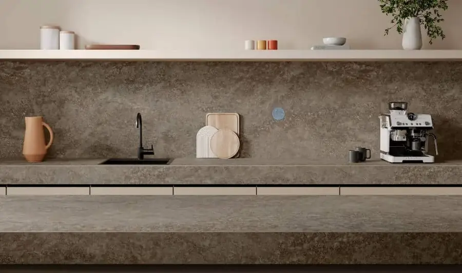
Piedra natural¿Se puede tener el carácter de la piedra italiana sin perder equilibrio?
Los tonos tierra intensos suelen desequilibrar el conjunto si no se dosifican bien.
Toscano, de Neolith, lo consigue: una gama de marrones y tonos tierra en tendencia, cálida y envolvente, con personalidad propia.
Disponible con el nuevo acabado Riverwashed, que aporta una textura suave y erosionada.
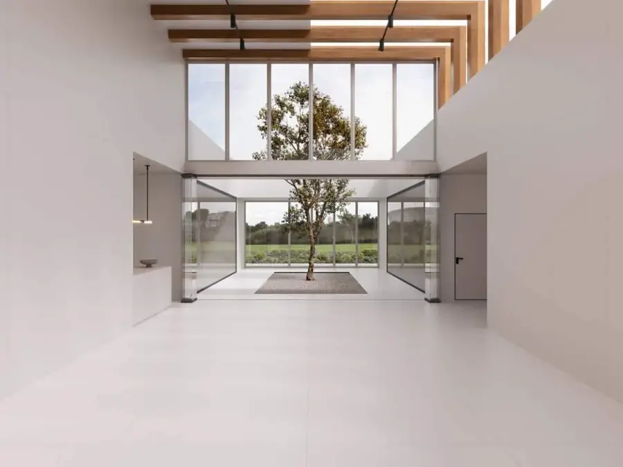
Piedra natural¿Qué color amplía realmente la percepción de un espacio?
No siempre el blanco puro. A veces necesita matices para no resultar frío.
Nivola, de Neolith, está inspirado en Cloud Dancer, el Color del Año 2026 de Pantone: un blanco roto cálido con matices beige y grises que suavizan la luz.
Disponible en 6 mm, con acabado Matt que reduce reflejos.
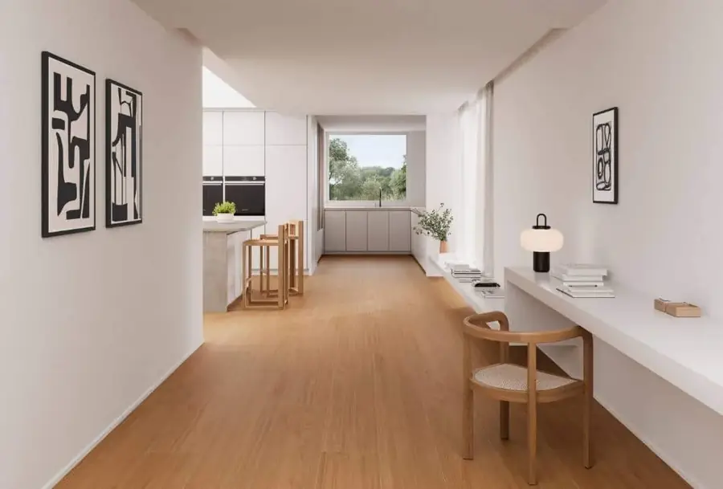
Piedra natural¿Se puede tener la calidez de la madera sin sus limitaciones de mantenimiento?
La madera aporta calidez, pero no siempre resiste bien espacios de alto tránsito.
Pasadena, de Neolith, lo resuelve: tonos miel inspirados en la luz de California, con el nuevo acabado Wood que aporta relieve y movimiento sin renunciar a la resistencia del material.
Especialmente indicado para hospitality y espacios comerciales.
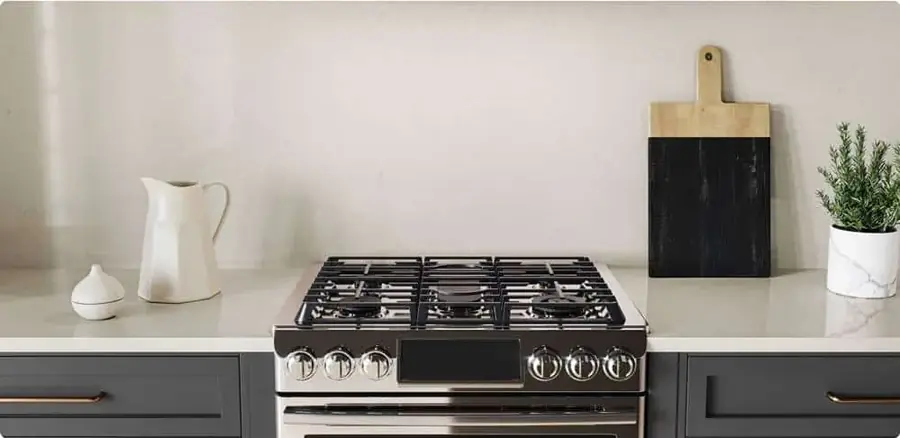
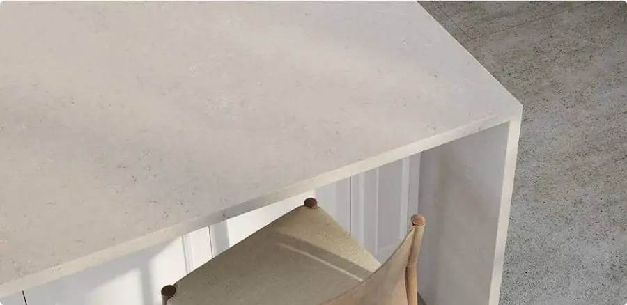
Piedra natural¿Por qué cuesta tanto encontrar un color que aporte calma sin caer en lo soso?
Demasiado neutro, y el espacio pierde carácter. Demasiado color, y pierde equilibrio.
Suma, la nueva serie de Silestone encuentra el punto intermedio: colores que aportan luminosidad y frescura, con un diseño limpio que se adapta a estilos clásicos, rústicos o contemporáneos.
Fabricada con la tecnología sostenible Hybriq+®, que garantiza resistencia y durabilidad.
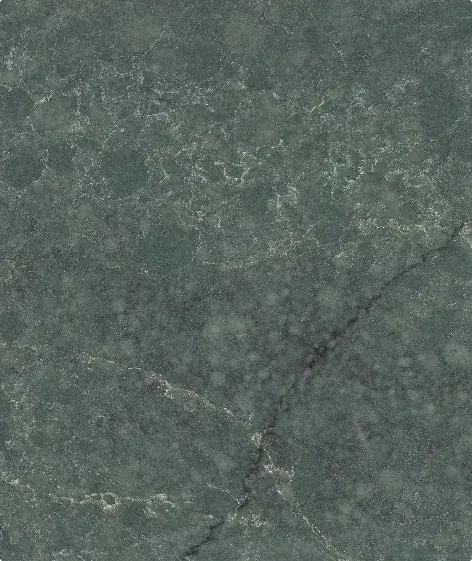
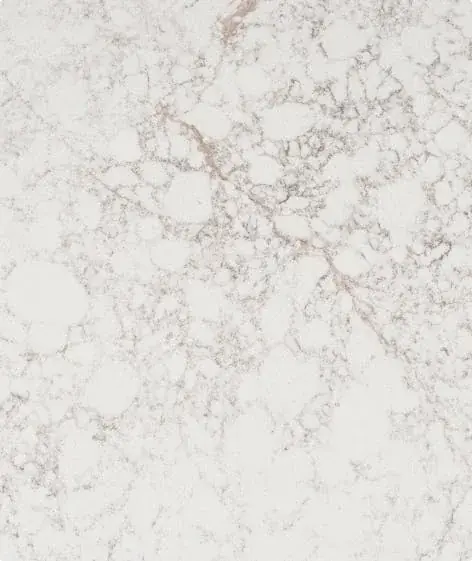
Piedra natural¿Puede un mismo material transmitir elegancia y libertad a la vez?
Normalmente hay que elegir: lo sobrio o lo expresivo, rara vez ambos.
Le Chic Bohème, de Silestone, no elige. Cuatro paletas de color con vetas elegantes y patrones sutiles que fusionan la sofisticación parisina con el espíritu bohemio.
Gran formato, apto para pavimentos y revestimientos.
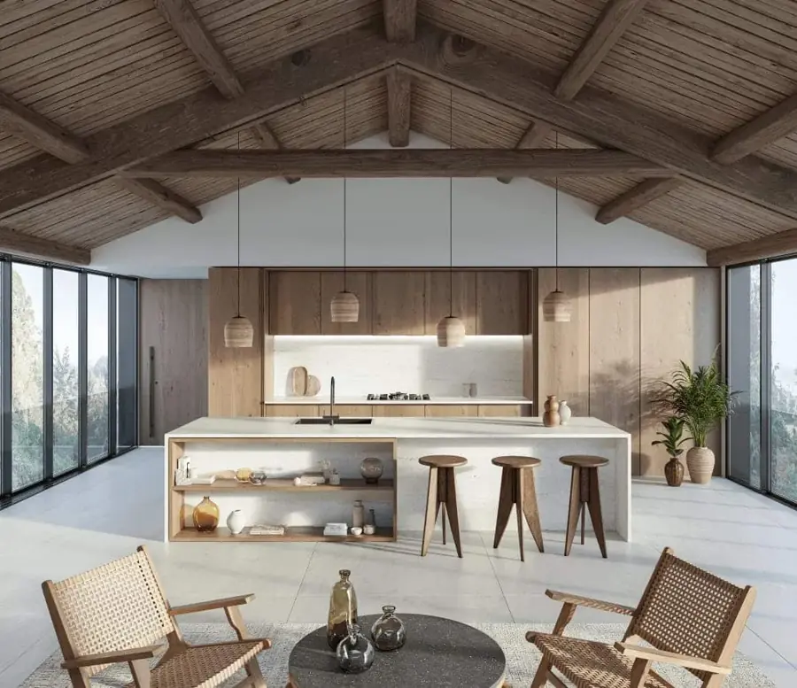
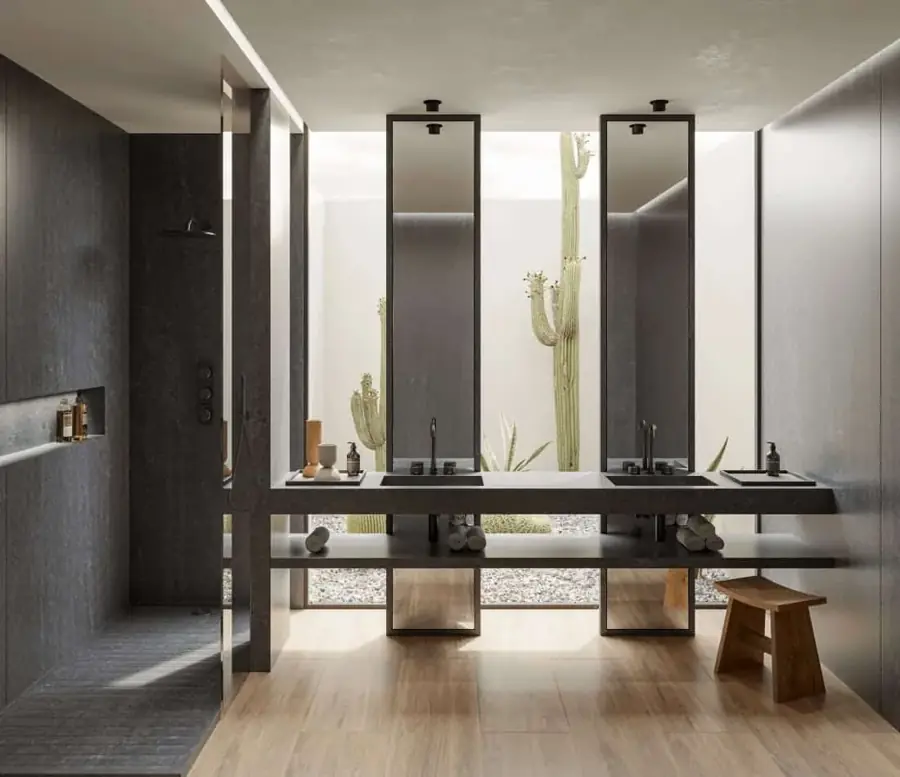
Piedra natural¿Cuánta materia prima nueva hace falta para fabricar una superficie de piedra?
Normalmente, mucha: extracción, erosión del suelo, emisiones.
Earthic, desarrollado por Cosentino junto al estudio Formafantasma, cambia el punto de partida: hasta un 30% de componentes reciclados —vidrio, PET, biorresina y fragmentos de Dekton— con un máximo de 10% de sílice.
Fabricada con un 99% de agua reciclada y un 100% de energía renovable certificada.
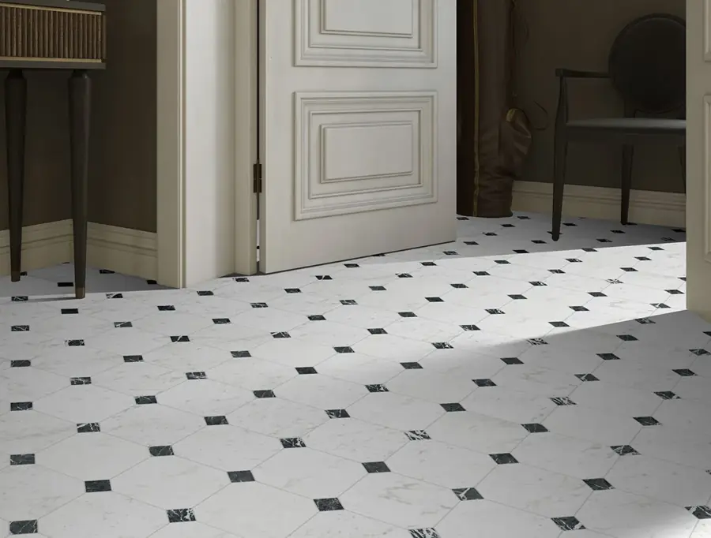
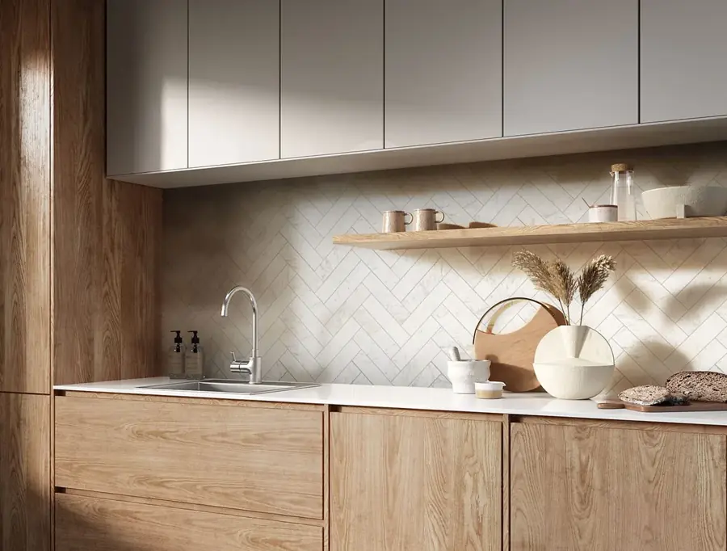
Piedra natural¿Se puede tener seis mármoles distintos sin depender de seis proveedores?
El mármol natural exige gestionar cada variedad por separado, con tiempos y costes distintos.
Classica lo reúne todo en un mismo catálogo de Terratinta: Carrara, Bianco di Asiago, Rosa Perlino, Rosso Verona, Verde Alpi y Nero Marquina, con la veta y el color reproducidos con precisión.
Te mandamos la carta completa si buscas ese efecto con más prestaciones.
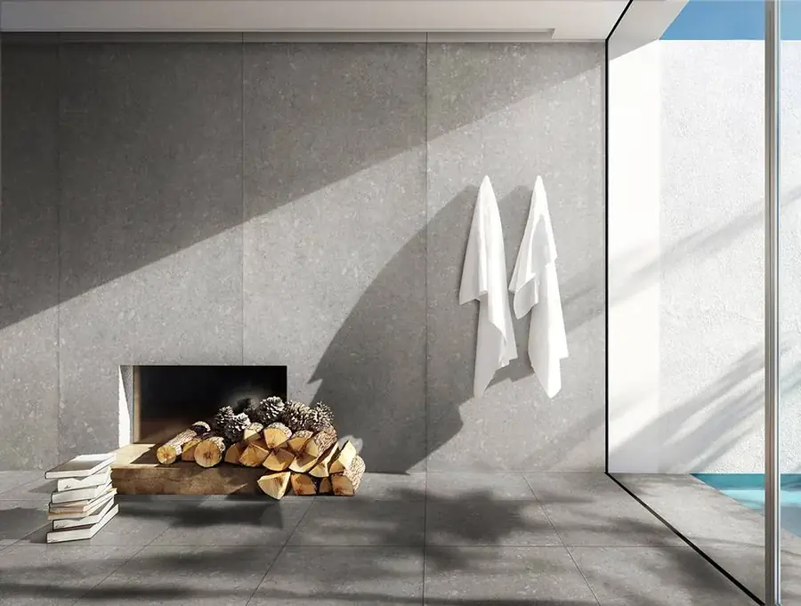
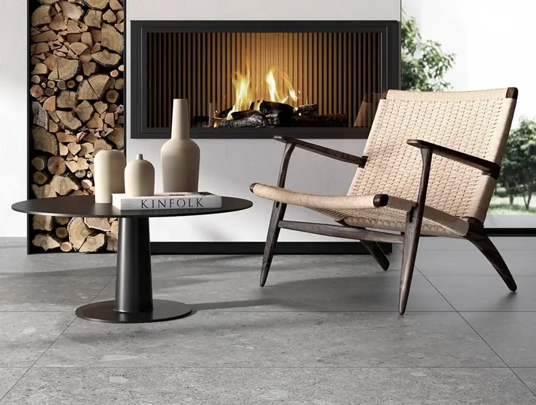
Piedra naturalPavimentos y revestimientos de piedras naturales Vicentina– Terratinta
Reproducir espacios con la sobriedad de la Pietra di Vicenza en proyectos es posible gracias a esta serie de matices equilibrados.
Sus cuatro tonos neutros – Bianco, Avorio, Tortora y Cenere – son el aliado perfecto para combinar con maderas naturales o metales cepillados.
La colección incluye el formato XXS para zonificar duchas o crear despieces rítmicos. Es una solución técnica que garantiza la calidez del material pétreo con la nula absorción del porcelánico, clave en zonas de aguas.
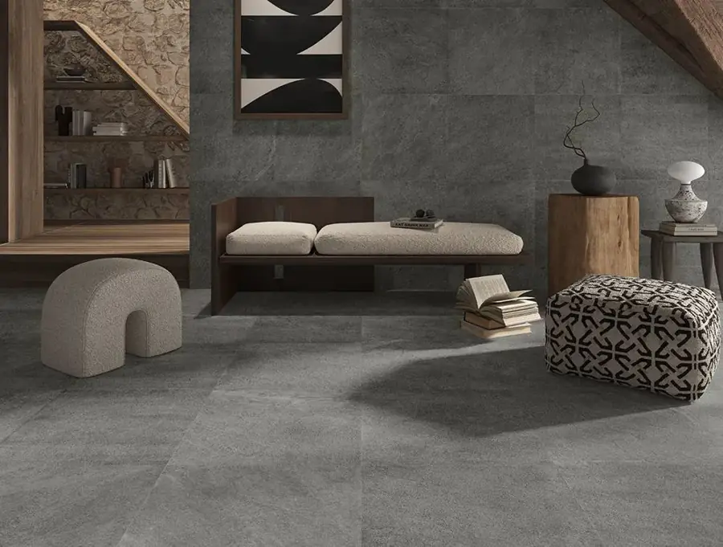
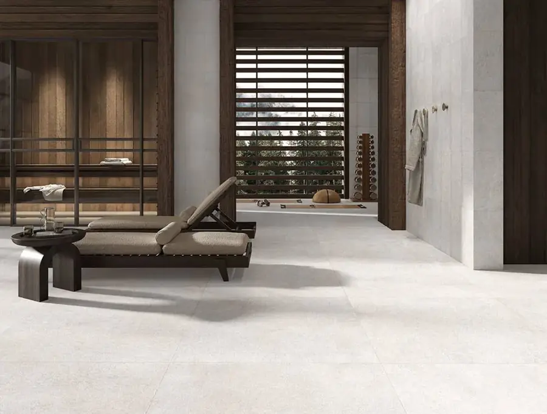
Piedra naturalPavimentos y revestimientos de piedras naturales Retreat – Terratinta
La colección Retreat combina la estética de las cuarcitas y el pórfido en una superficie cerámica que funciona bien en proyectos que buscan una piedra con presencia, pero fácil de combinar.
Sus variaciones gráficas recuerdan a materiales naturales muy antiguos, lo que aporta profundidad y carácter sin recargar el espacio.
Los distintos tonos de la nueva gama permiten trabajar desde interiores contemporáneos hasta ambientes más clásicos, ofreciendo una base sólida para composiciones cálidas y duraderas en pavimento y revestimiento.
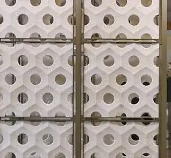
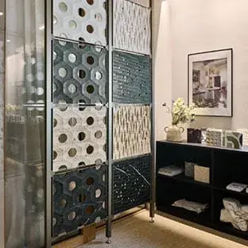
Piedra naturalDivisores Quinte – Lithos Design
Lithos Design presenta su nueva colección de divisores de estancias «Quinte». Con los modelos Palmanova y Papiro, esta reconocida marca apuesta por la combinación de mármol y estructura metálica.
Fabricada con materiales robustos, la colección destaca por su fácil manejabilidad e instalación. Su diseño innovador potencia la luminosidad mediante dibujos integradores y perforaciones que conectan ambas estancias, alejándose de lo opaco y convirtiéndose en un elemento decorativo adicional.
Disponibles en cuatro tipos de mármol, los módulos de 60×60 cm y 10 kg son perfectos para cualquier proyecto de interiorismo.
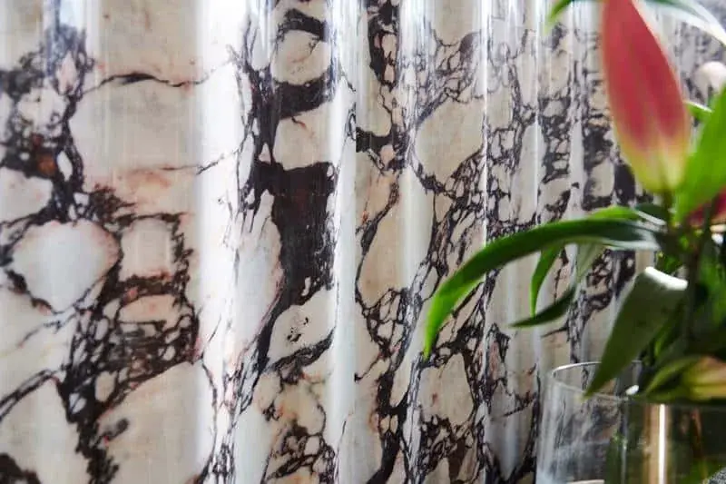
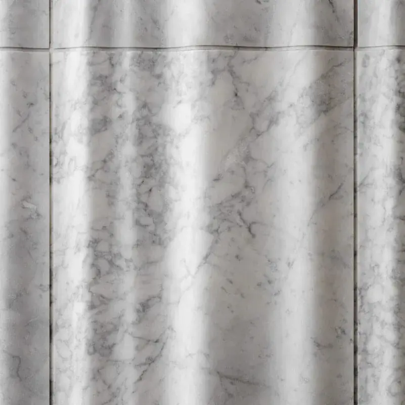
Piedra naturalParedes 3d en mármol natural Chiffon – Lithos Design
Formando parte de la exquisita colección Drappi di Pietra de Lithos Design, este revestimiento tridimensional de piedra natural y mármol redefine el universo de las paredes a partir de formas rectilíneas verticales que dotan de gran dinamismo y ritmo a los interiores de cualquier estancia.
Su apariencia, con gran carácter y personalidad, genera un recorrido visual único fruto de este estilo artesanal que el material posee.
Como si de un decorado se tratara, la combinación de luces y sombras logra infundir vida en su estética.
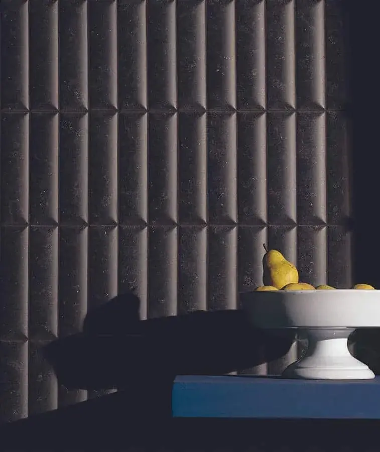
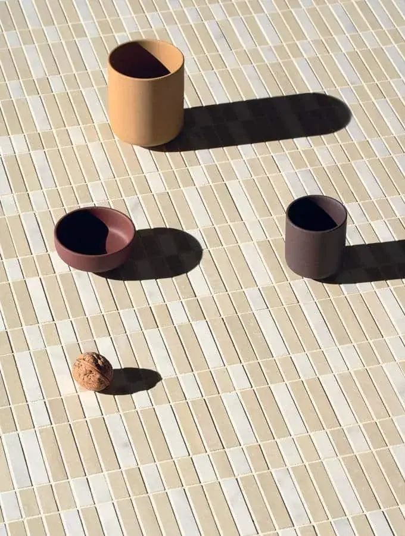
Piedra naturalRevestimientos en piedra natura Italic – 41zero42
La nueva colección de la firma italiana se inspira en los rasgos de la arquitectura racionalista para dar forma a sus revestimientos.
Con un estilo equitativo del espacio, donde la distribución de los elementos se vuelve fundamental y la elección de los materiales apuesta por lo que la naturaleza nos brinda.
Italic es el resultado de trabajar con tres piedras naturales diferentes: mármol de Carrara, Travertino y Piedra de Lava. Tres tonalidades que al unirse consiguen evocarnos a todos aquellos paisajes marinos que la tierra ofrece.
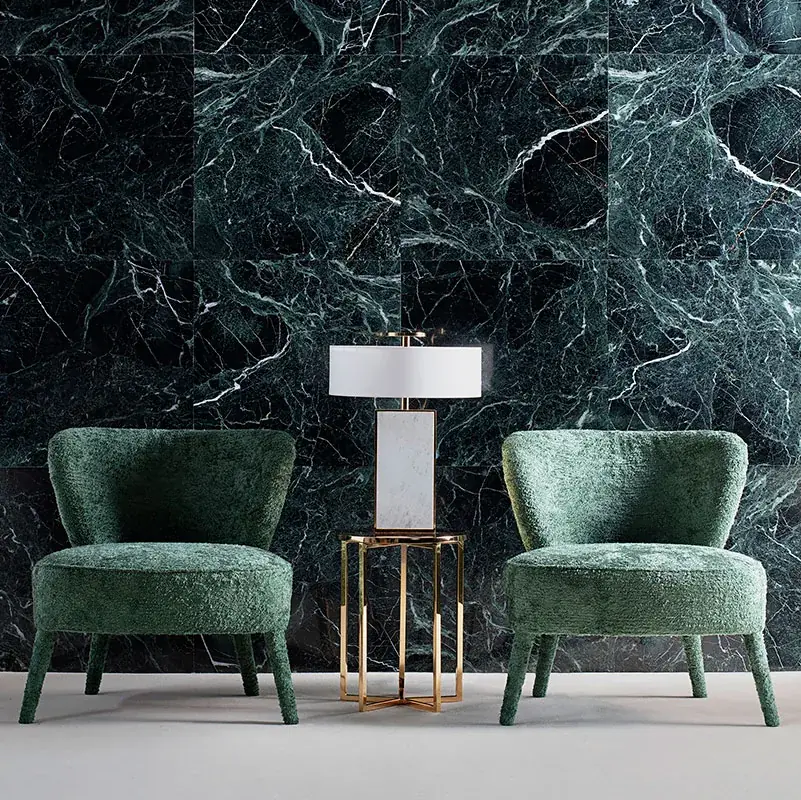
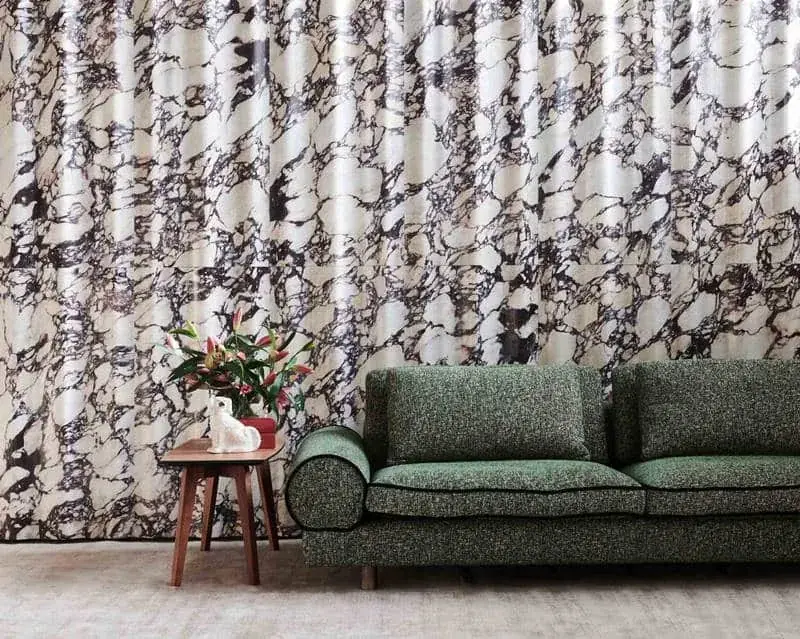
Piedra naturalMármol Drappi di Pietra – Lithos Design
Concebida por el talentoso Raffaello Galiotto, con grandes referencias vinculadas al mundo de la moda, sus 3 modelos en mármol consiguen capturar la sofisticación y elegancia de este mundo a la vez que garantizan la mayor funcionalidad, tan propia en los revestimientos modulares.
El modelo Foulard se caracteriza por sus juegos de luces y sombras que aportan movimiento a las piezas. Tulle, en cambio, asume la representación del tejido de tul otorgando ligereza visual a las paredes.
Por último, Chiffon y sus pliegues trabajados en forma vertical ayudan a transmitir esta dimensionalidad triple con ritmo y dinamismo.

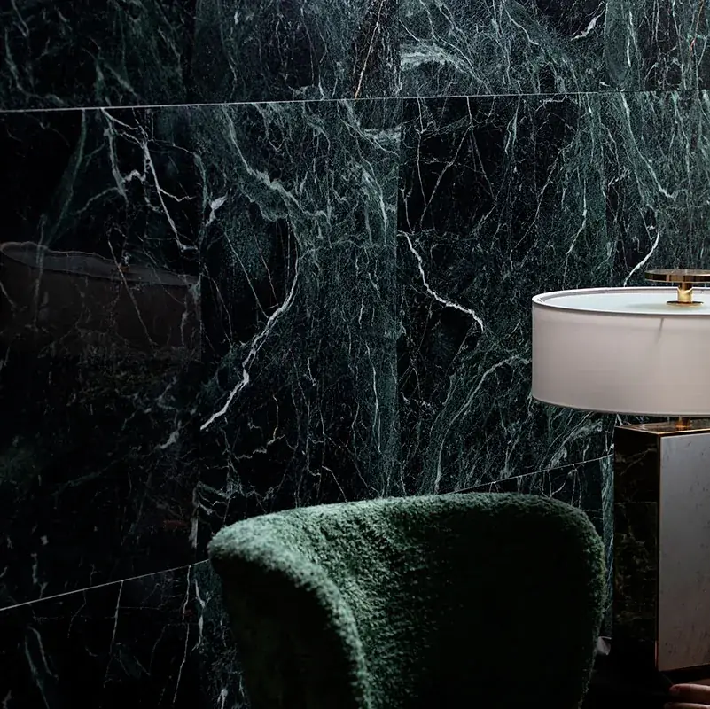
Piedra naturalRevestimiento 3d de mármol Foulard – Lithos Design
El modelo Foulard de la colección de revestimientos Drappi Di Pietra de Lithos Design, deslumbra en la creación de paredes tridimensionales para interiores, con el mármol como único protagonista.
Su diseño fluido y geométrico, reminiscente de pliegues naturales, genera juegos de luz y sombras que imitan el movimiento de un foulard agitado por una suave brisa, otorgando a las paredes sensación de ligereza.
Disponible en diversos formatos y materiales, esta colección redefine la estética con innovación y sostenibilidad.
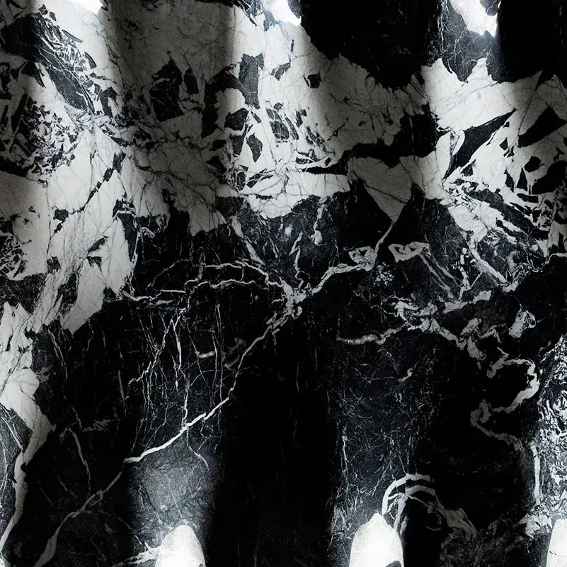
 Piedra natural
Piedra naturalRevestimiento mármol Tulle – Lithos Design
Integrante de la exclusiva serie de revestimientos Drappi Di Pietra de Lithos Design, el modelo Tulle abraza las paredes interiores con una delicada ligereza que te transportará hacia la sutileza y plasticidad del tul.
Sus pliegues innatos van formando suaves relieves cambiantes que, según las luces y sombras incidentes, confieren a este revestimiento una esencia vaporosa.
La mezcla de niveles y relieves en su diseño elevan la estética de toda estancia hacia la máxima elegancia y sofisticación.
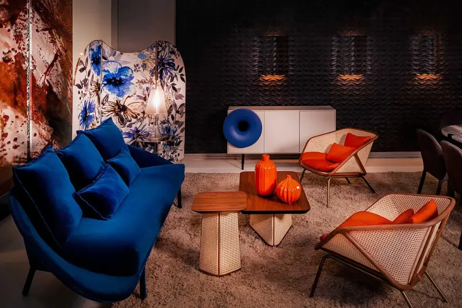
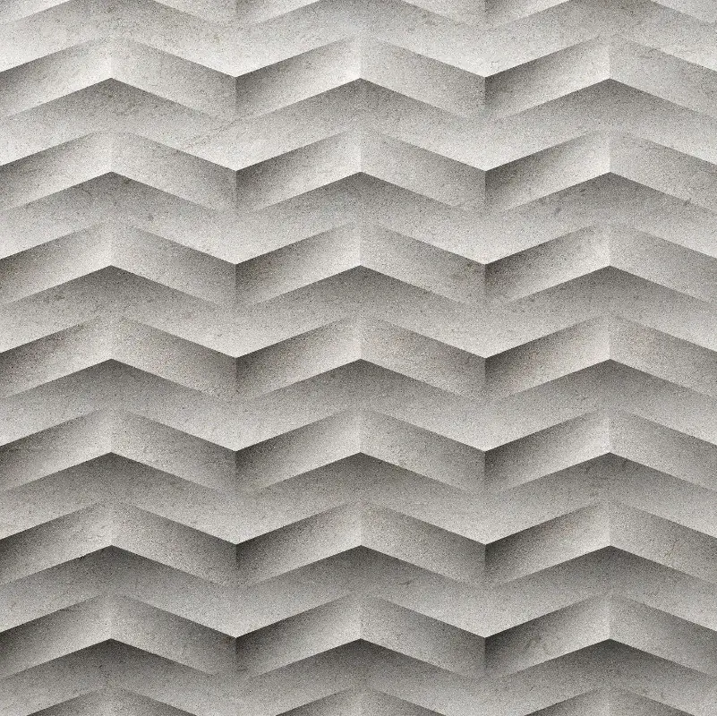
Piedra naturalPanel tridimensional en mármol y piedra natural Giza – Lithos
Giza es el concepto que da nombre a la nueva colección de paneles para paredes tridimensionales de Lithos.
La marca incorpora a su catálogo esta nueva línea inspirada en el Antiguo Egipto. Su diseño compuesto por formas triangulares, llevarán tu imaginación hacia la tierra de los faraones.
Las piezas han sido talladas para confeccionar paneles modulares en mármol y piedra natural, dos materiales que aportan robustez y personalidad a cualquier estancia.
Sus tonalidades oscuras, con detalles en dorado, y juegos de luces y sombras, posicionan a la colección entre las opciones más sobrias y elegantes del momento.
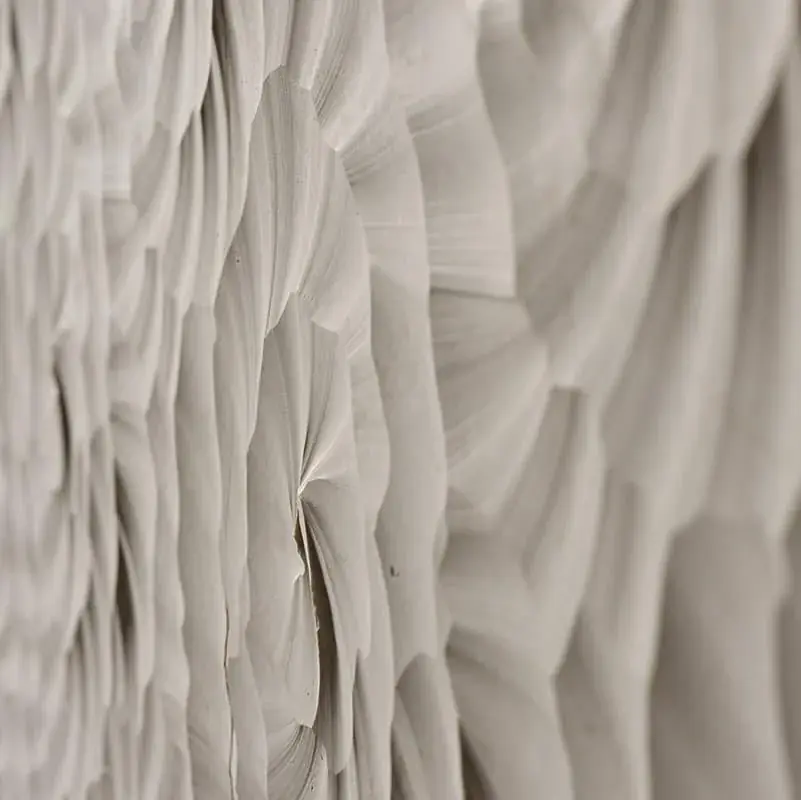
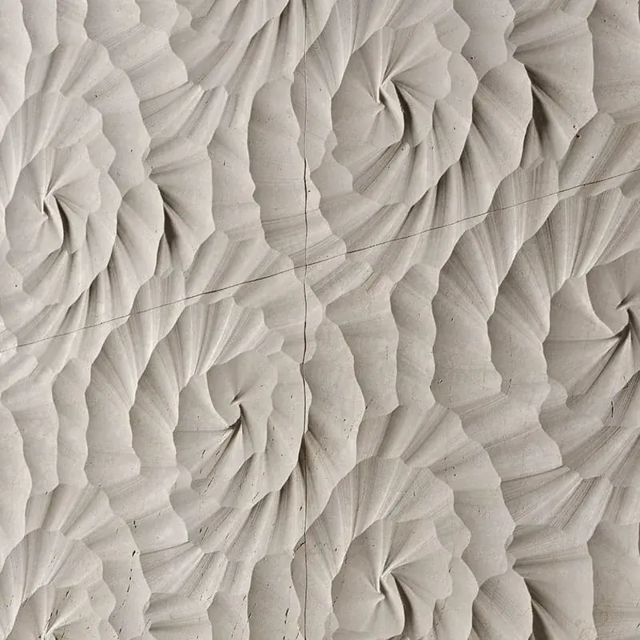
Piedra naturalPanel tridimensional para muros Sahara - Lithos
Lithos Design nos transporta a un gran desierto de arena con su nueva colección para muros de paneles tridimensionales, “Sahara”.
Inspirada en las siluetas que la naturaleza nos brinda y, sus formas talladas en piedra natural y mármol, Sahara es un sutil recuerdo a las huellas que el viento deja en estos materiales a su paso por el desierto.
Con un diseño muy particular, de apariencia cálida y suave, sus piezas en tonos tierra visten cualquier muro con una gran identidad y esencia gracias a sus ondas modulares.
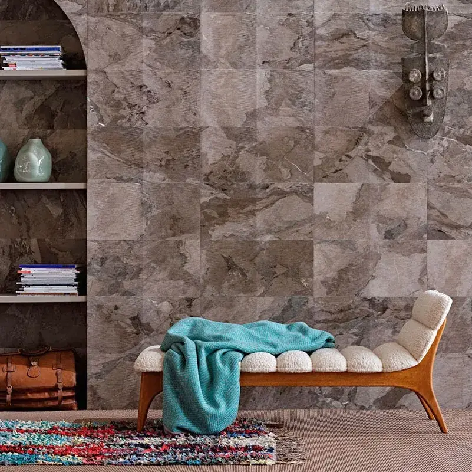
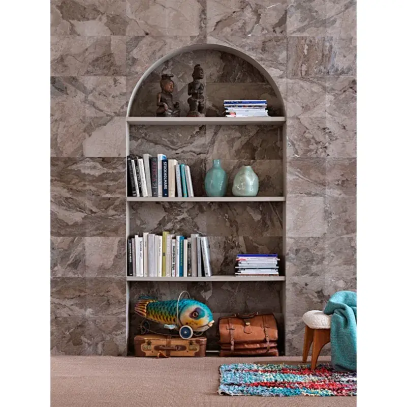
Piedra naturalPanel tridimensional decorativo Dune – Lithos
Lithos Design vuelve a sorprender con su nueva línea de paneles decorativos “Dune”.
Como su propio nombre permite intuir, esta colección de paneles tridimensionales busca parecerse a las dunas que se forman con el paso del viento por algunas zonas desérticas.
Sus piezas, diseñadas sobre piedra, se caracterizan por tener milimétricas incisiones en forma de abanico, pequeñas hendiduras que se combinan con otras líneas finas en relieve consiguiendo un efecto de onda natural.
Gracias a este peculiar acabado, las paredes adquieren un papel protagonista en cualquier estancia aportando un punto decorativo diferenciador, pero respetando el encanto del resto del mobiliario.
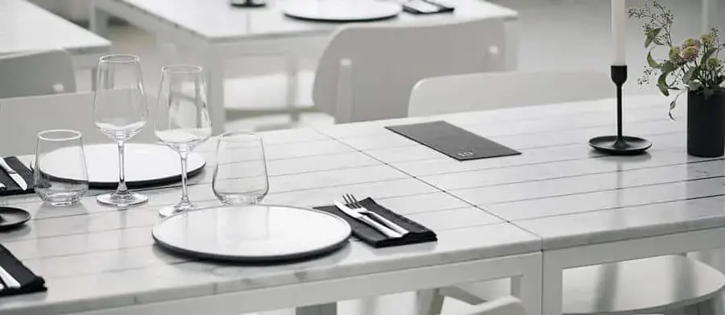
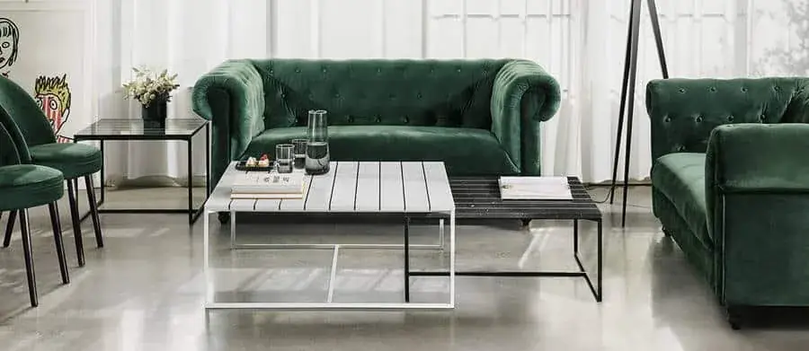
Piedra naturalMesas de mármol decorativas Gessato – Lithos Design
Gessato es la nueva colección de mesas de centro y auxiliares de Lithos Design. Piezas de colección, con aspecto premium y carácter decorativo, hechas con mármol y caracterizadas por las líneas verticales que se integran en las losas.
Su diseño consigue romper con el clasicismo que aporta el material y aunque conservan su elegancia, las rayas ayudan a modernizar las piezas.
Con varios tamaños y formas, las mesas pueden combinarse entre ellas sin perder la estética lineal que predomina en su diseño. La colección está disponible en blanco y negro, y el motivo rayado siempre va en contraste cromático.
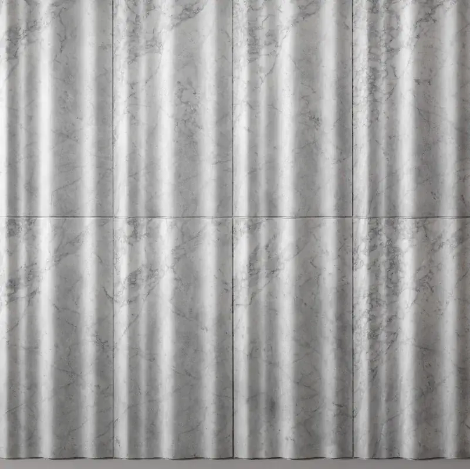
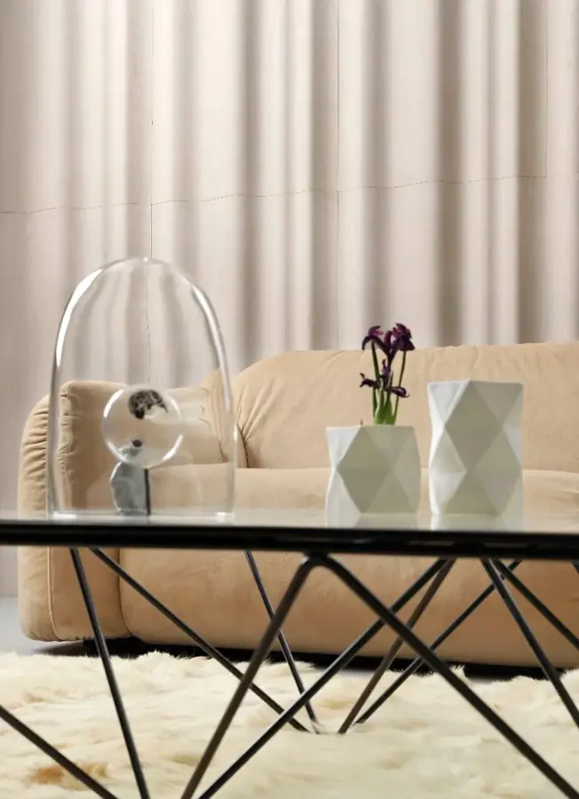
Piedra naturalRevestimientos imitación mármol Chiffon – Lithos Design
Lithos Design incorpora a su catálogo de revestimientos la colección más original y extravagante, “Chiffon”. Nuevos módulos individuales en 3D para interiores que consiguen imitar el efecto de materiales naturales como la piedra o el mármol.
Con un aspecto innovador, los módulos están diseñados con pliegues verticales en distintos tamaños creando una profundidad ficticia. Gracias a la disparidad de su diseño, en la combinación se crean formas extrañas que aportan personalidad y carácter a cualquier estancia donde se usen.
Aunque con aspecto robusto, el uso de poliuretano en las piezas permite que sean ligeras y fáciles de instalar. Además, resultan suntuosas al tacto generando cierto movimiento y dinamismo en los espacios.
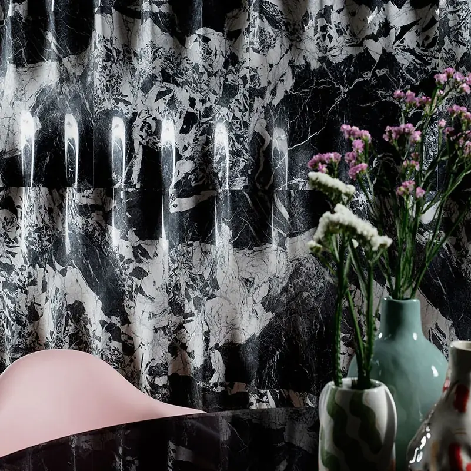
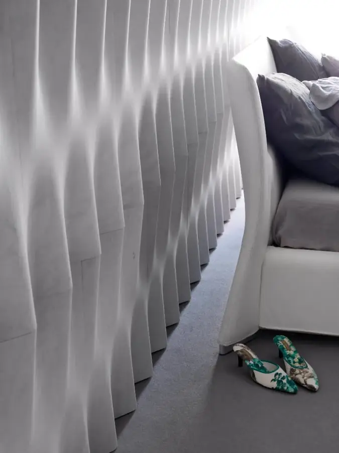
Piedra naturalRevestimientos para paredes imitación mármol Tulle – Lithos Design
La nueva línea “Tulle” de revestimientos para paredes de Lithos Deisgn consigue envolver cualquier habitación de inspiración y creatividad.
Imitando el movimiento y la forma de los velos superpuestos, sus pliegues con ligeros relieves ofrecen dinamismo a la estancia a través de las formas que construyen sus diseños, dando lugar a su libre interpretación.
Aun teniendo mucho protagonismo visual, por la intensidad de los diseños, la colección crea un aura de ligereza y sensibilidad sujeta al contraste de las paredes con el resto del mobiliario y elementos decorativos.

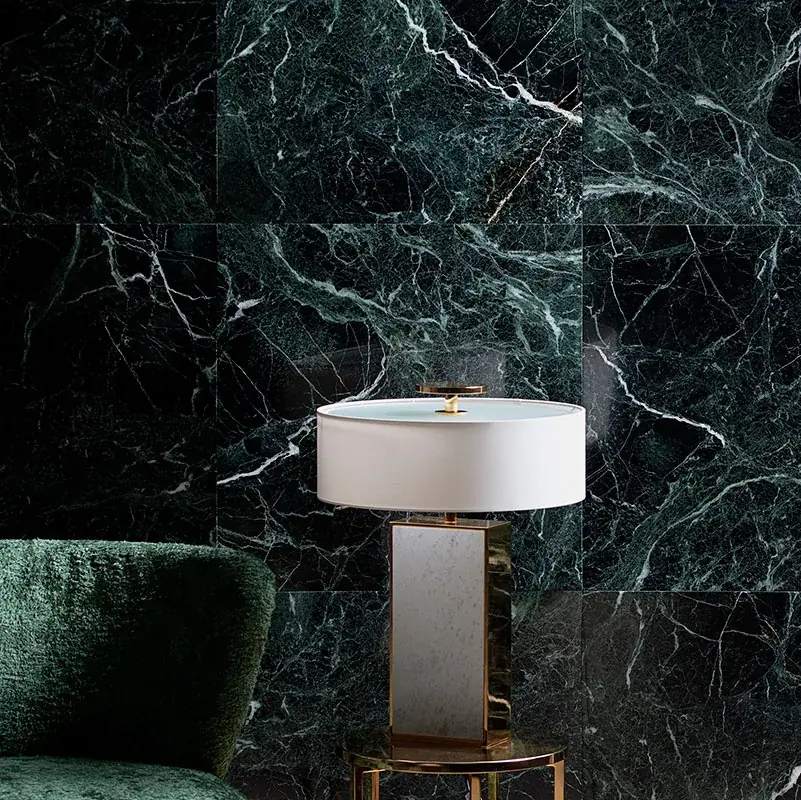
Piedra naturalRevestimiento piedra natural Foulard – Lithos Design
Lithos Design presenta su colección de revestimiento para paredes más elegante y sofisticada, “Foulard”. Una colección inspirada en las formas de la naturaleza como la piedra o el mármol.
La colección está disponible en seis modelos distintos que se mueven entre colores claros como el blanco o el beige y otro más oscuros, como el verde botella o el negro. Sus grietas, también en diferentes tonos, contrastan con el color base de las piezas consiguiendo piezas con mucha personalidad y en armonía con cualquier interior.
Precisamente son estas grietas las que aportan ritmo y vida a las paredes, que ganan un nivel tridimensional gracias al juego de luces y sombras que crean los pliegues.
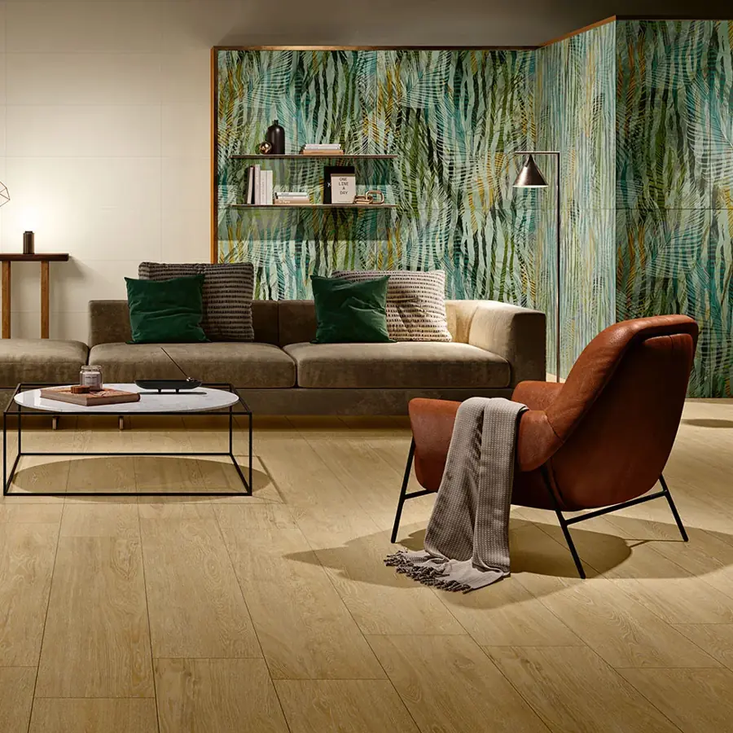
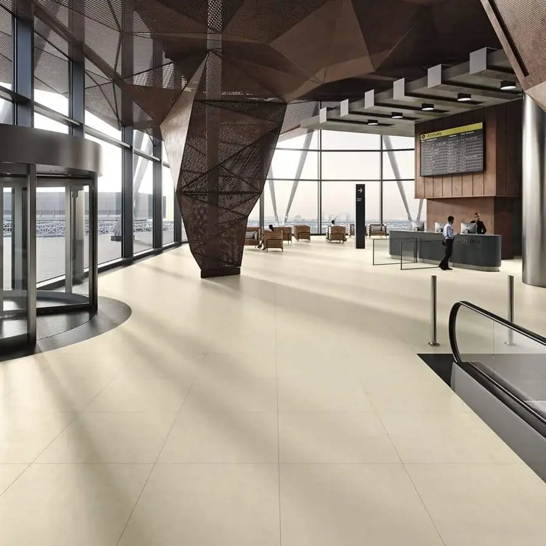
Piedra naturalPavimento y revestimiento de piedra natural Colecciones Synchrony – Revigres
Revigres evoluciona hacia lo sostenible y presenta Synchrony, una colección respetuosa con el medioambiente que tiene su origen en lo natural: madera, piedra y mármol.
Con formas orgánicas y colores tierra, Synchrony transmite serenidad a los espacios y difumina la línea entre lo interior y lo exterior.
Ambientes con carácter que representan múltiples personalidades gracias a la versatilidad de los materiales: 5 estilos decorativos para los proyectos más diversos.
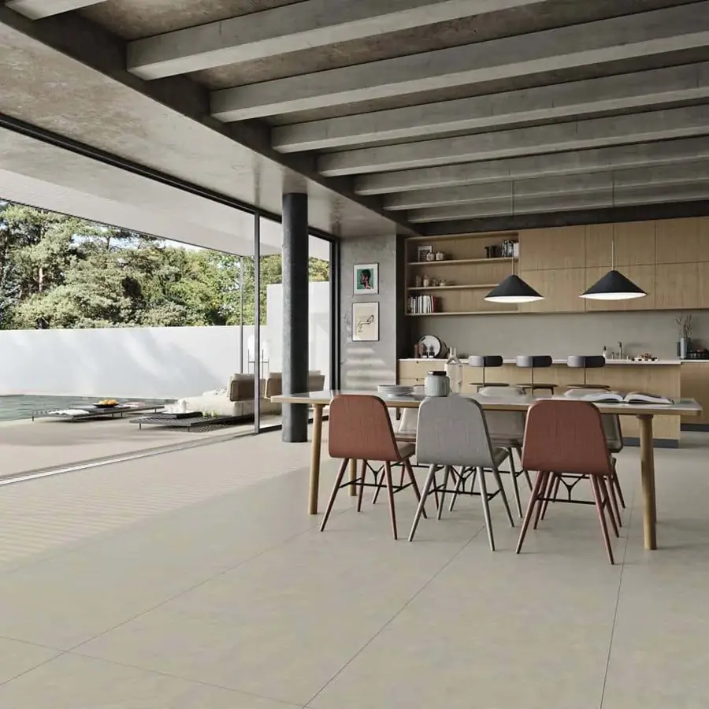
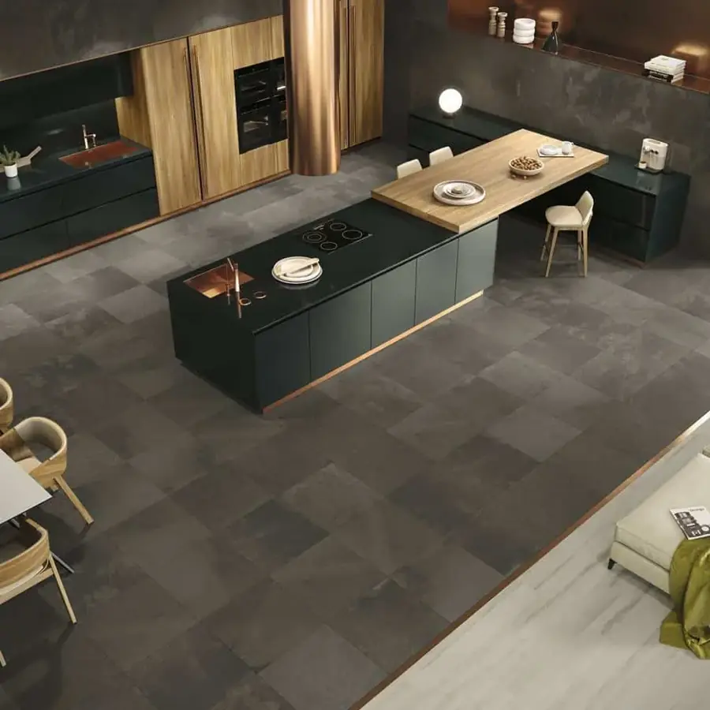
Piedra naturalPavimento y revestimiento de piedra natural Omnistone – Revigres
Revigres responde a los proyectos arquitectónicos de mayor envergadura con sus pavimentos y revestimientos de piedra natural Omnistone.
Porque la resistencia no está reñida con la estética, se caracterizan por su diseño exclusivo y por conservar la máxima calidad técnica.
Diseñados para espacios sufridos, su amplitud de gama te permite elegir aquél que mejor vaya con tu proyecto:
– 6 colores en tonos piedra: Ice, Bon, Platina, Rope, Iron, Jet
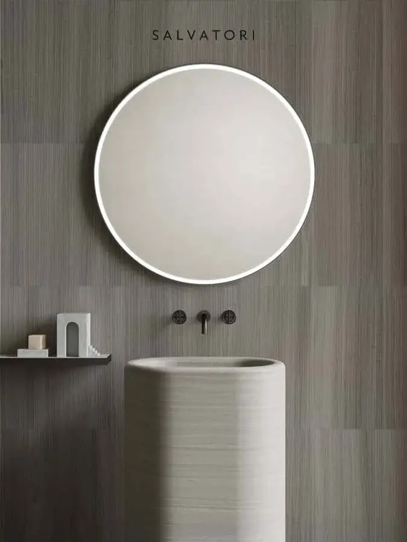
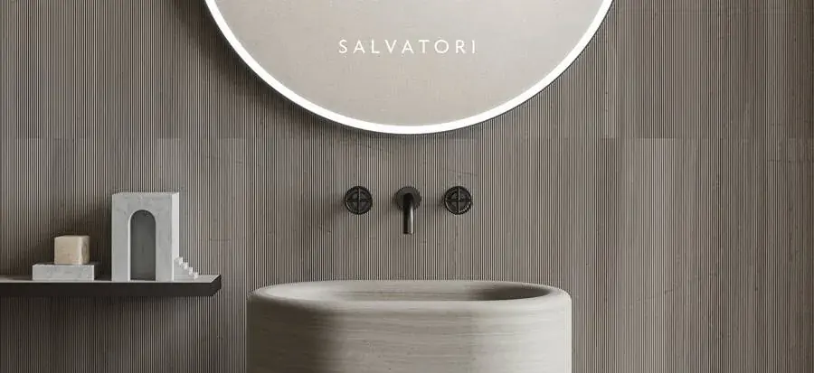
Piedra naturalPavimentos y revestimientos de piedras naturales Spaghetti – Salvatori
Un claro homenaje a la pasta italiana, a través de la textura ondulada, creado por Salvatori al alimón con la gran diseñadora Elisa Ossino. Spaghetti es una colección de look exquisito y elegante.
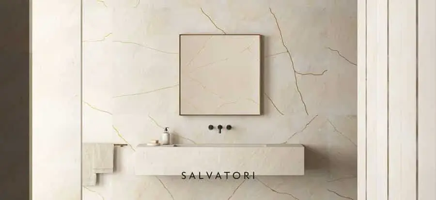
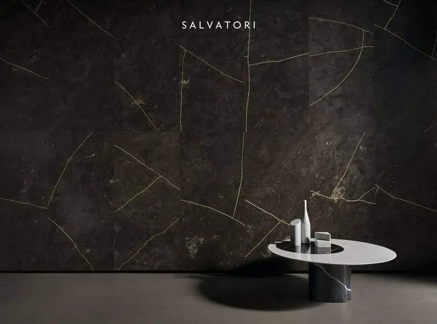
Piedra naturalPavimentos y revestimientos de piedras naturales Lost Stones – Salvatori
Piero Lissoni, diseñador inconfundible por su estilo, ha creado junto con Salvatori esta colección inspirada en la ancestral técnica japonesa Kintsugi. Lost Stones es una propuesta elegante, que posee un encanto discreto, pero glamuroso.
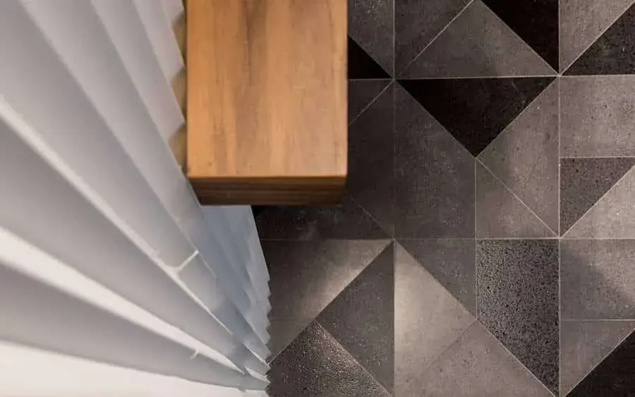
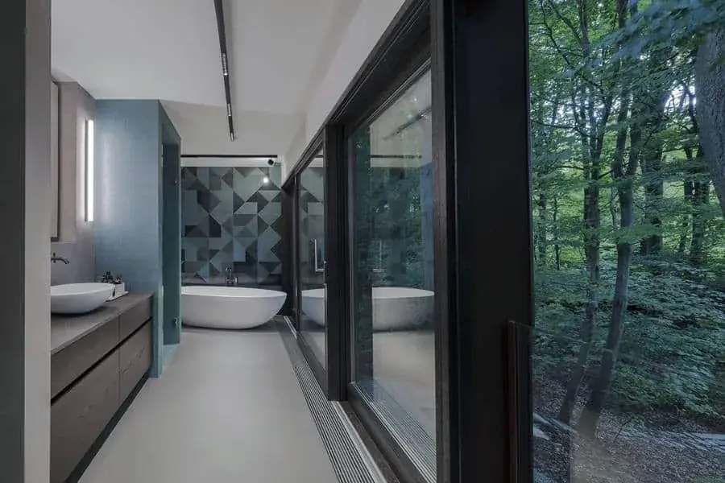
Piedra naturalPavimentos y revestimientos de piedras naturales Multiplem – Nero Sicilia
Partir de la simpleza para terminar en lo sencillo. Es así como Multiplen de Nero Sicilia, consigue un diseño refinado, de cuatro formas diferentes, partiendo de un solo cuadrado. Además, las combinaciones de color son infinitas gracias a Colourfild.
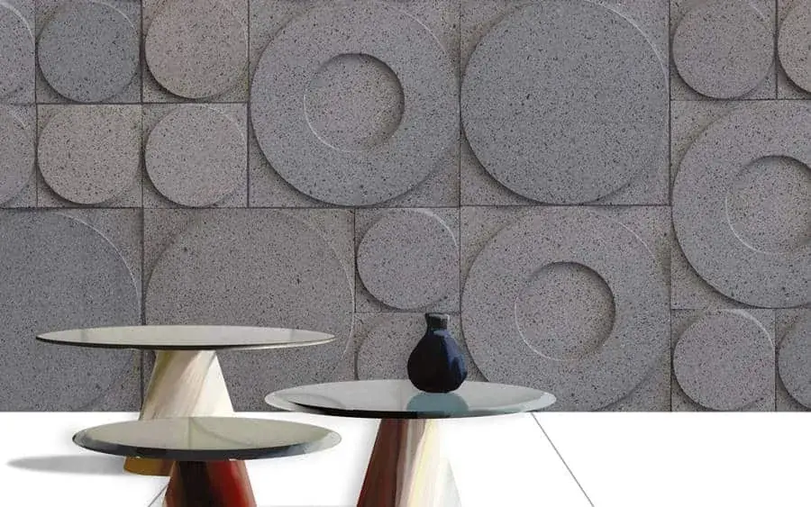
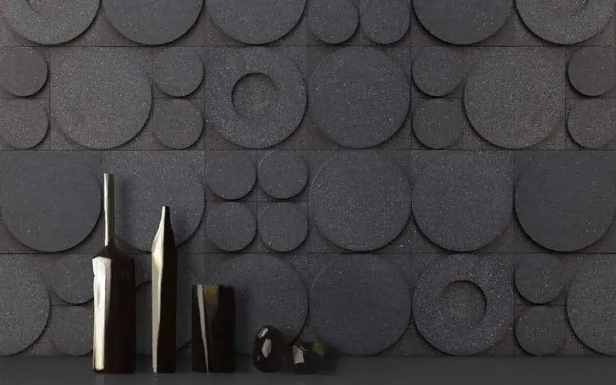
Piedra naturalPiedras naturales pavimentos y revestimientos Buki ARelievo – Nero Sicilia
Buli ARelievo se centra en el círculo como el eje de su diseño, con el objetivo de dotar los espacios de una personalidad única. Una forma redonda de jugar con las luces y las sombras, en piedra de lava. Una forma de crear paredes inconfundibles, llenas de expresividad.
- Piedra natural
Piedras naturales pavimentos y revestimientos Eltira – Lithos Design
Mármol y latón se combinan desde la excelencia en Eltira. Lithos Design nos presenta una pieza única del diseño, una mesa de mármol magnética, altamente funcional, que permite un alto ahorro de material natural.
- Piedra natural
Pavimentos y revestimientos de piedras naturales Origami – Nero Sicilia
Una colección fruto de la colaboración entre Nero Sicilia y la prestigiosa diseñadora Paola Lenti. Origami juega con los pliegues de lava natural y lava oxidada para evocar le belleza estética japonesa.
- Piedra natural
Pavimentos y revestimientos de piedras naturales Textone – Nero Sicilia
Textone está formado por marcos de encaje y tejidos colocados sobre piedra de lava. Se presenta en dos series (iRicami y iTessuti) de una potencia estética que no dejan indiferente.
- Piedra natural
Pavimentos y revestimientos de piedras naturales Stone Tatami – Salvatori
Una colección de pavimentos y revestimientos creada por Piero Lissoni. Inspirada en la sobriedad y la elegancia de los tatamis japoneses, fue seleccionada como finalista en los premios NYCxDESIGN.
- Piedra natural
Pavimentos y revestimientos volcánicos Incontri - Nero Sicilia
Incontri propone en un solo material, la piedra de lava de Nerosicilia, un universo de posibilidades estéticas, diseñado por la compañía de Paola Lenti.
Una propuesta de colores y formas de personalidad arrebatadora muy apreciado por profesionales del diseño y la arquitectura a la hora de poner en valor pavimentos y revestimientos.
- Piedra natural
10.000 m2 de piedras naturales - Antolini
En Octubre asistimos al evento de presentación del showroom de Nerinea, distribuidor oficial de la marca de piedra natural Antolini.
El showroom de 2.500m2, incluye ocho espacios de varios cientos de m2, todos ellos decorados con esta piedra natural; una zona con varias decenas de muestras y texturas; así como otros dos espacios que incluyen tienda y gallería con una exposición de 10.000m2 y 200 piedras naturales.
- Piedra natural
Revestimientos piedras naturales Cotone - Salvatori
Hablar de la colección de revestimientos de piedra natural COTONE, es hacerlo de una técnica desarrollada por los escultores desde hace ya muchos años. De COTONE destacamos la sutiliza de la superficie, la cuál es trabajada de manera que se consigue un efecto con rayas muy interesante a la par que elegante.
COTONE lo tienes disponible en Bianco di Carrara y Pietra d´Avola, y tanto para interiores como exteriores (incluso los húmedos).
- Piedra natural
Piedras naturales Tratti - Salvatori
Con Tratti , la diseñadora Elisa Ossino ha tomado la textura de Salvatori , añadiendo barras de metal en negro medianoche para crear un modelo llamativo que se convertirá en un tema de conversación en cualquier entorno .
Disponible en Bianco Carrara y Pietra d’ Avola .
Bueno de saber que:
Tratti viene en un kit que contiene 9 azulejos ( con una mezcla igual de los tamaños de 9,8 x 58,6 cm – 19,8 x 58,6 cm – 29,3 x 58,6 cm) junto con 9 insertos metálicos , listo para montar. Cada kit tiene una superficie de 1,03 metros cuadrados . Espesor: 1 cm